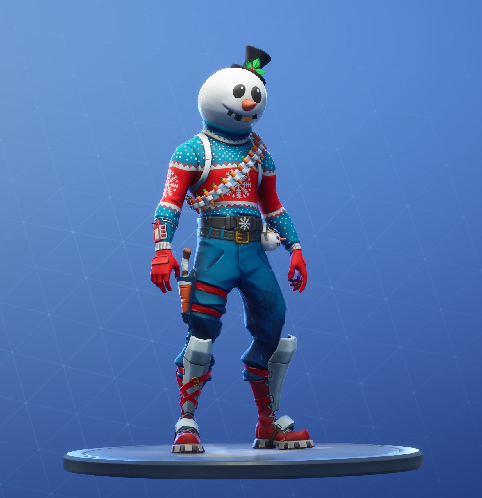
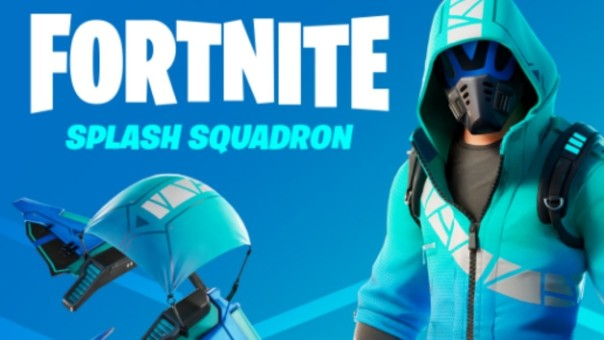
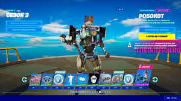

скіни в fortnite-які вони?Для чого вони?
Скіни не дають ніякого преймущиства вони тільки для краси.


Але є такі скіни які можуть виглядати наприклад з кущік з-за каміня і тд. наприклад-здоровяк,
А є такі яки які вам допоможуть сховатися.Наприклад-Ялинка Джоунсі,Лісовий дух.